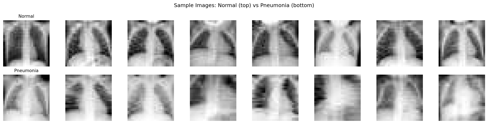
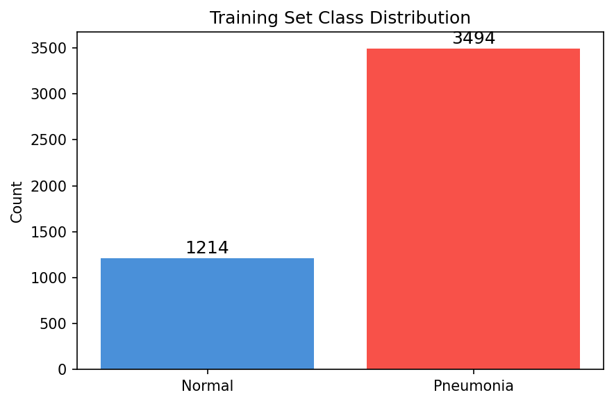
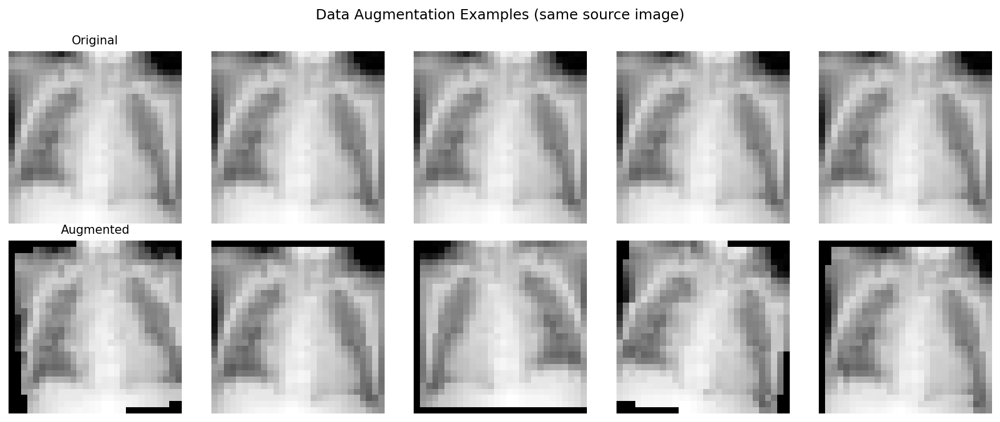
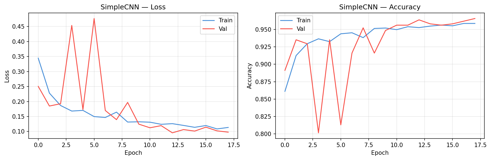
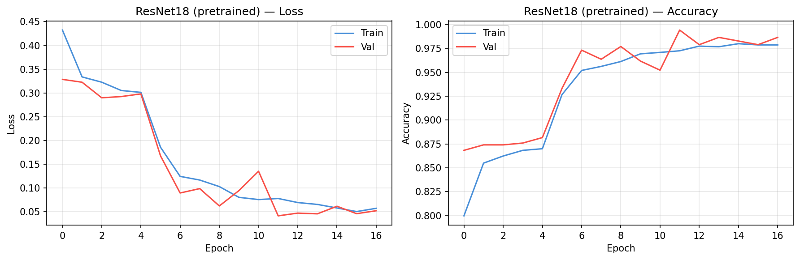
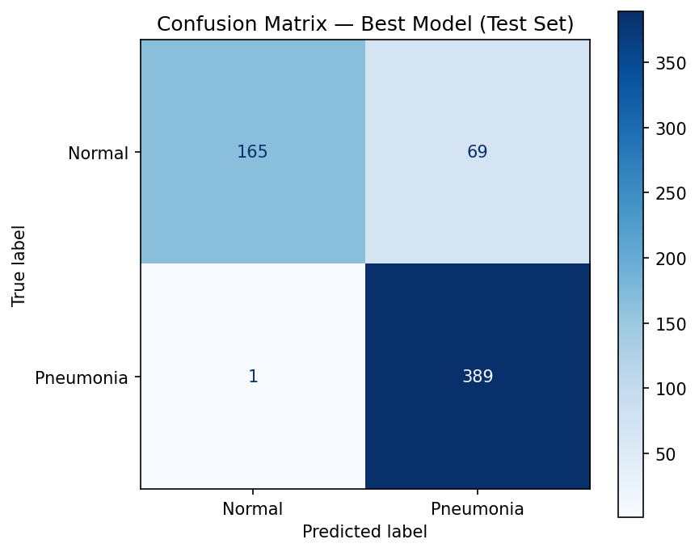
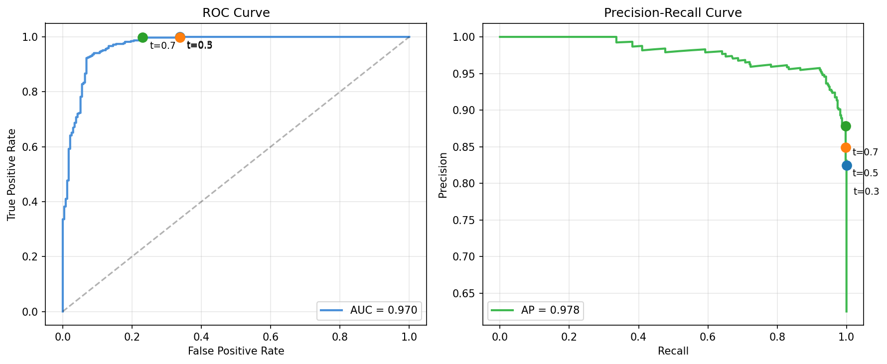
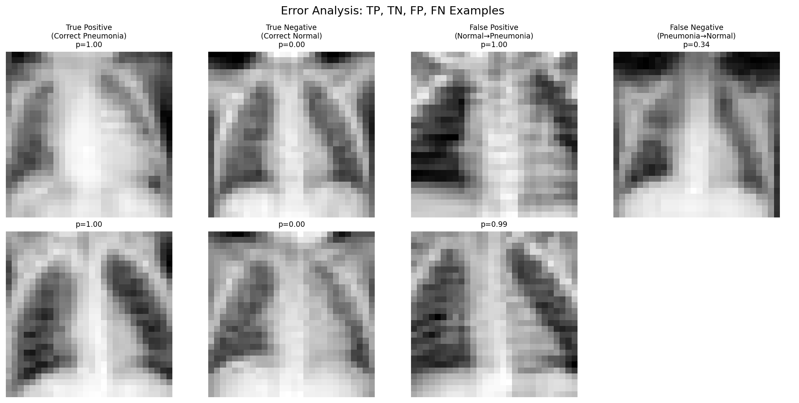
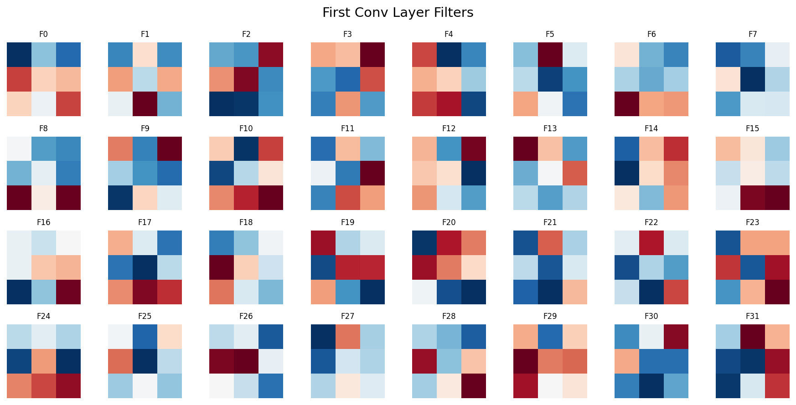
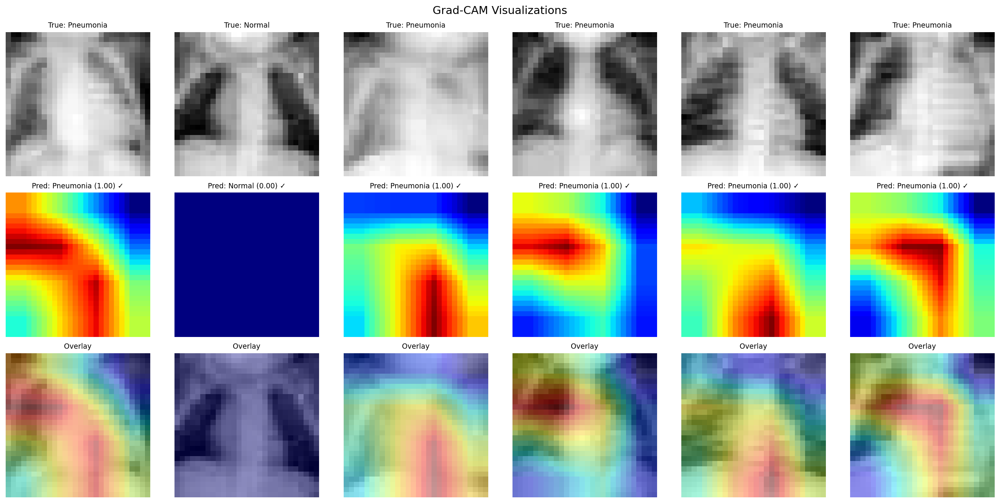

PneumoniaMNIST: 1214 normal,
3494 pneumonia in training set.
The dataset is imbalanced (~75% pneumonia), which means accuracy alone is misleading.

Normal chest X-rays (top) vs pneumonia (bottom). Even at 28×28 resolution,
pneumonia cases show increased opacity in the lung fields.

Training set class distribution — significant imbalance toward pneumonia.

Data augmentation creates training variety through flips, rotations,
translations, and brightness changes — all clinically safe transformations.
Part 2: Simple CNN
3-layer CNN with BatchNorm and dropout: 93,249 parameters.
Architecture: Conv(32) → Conv(64) → Conv(128) → AdaptiveAvgPool → FC(1).

SimpleCNN training curves showing loss and accuracy convergence.
Part 3: Transfer Learning
Key insight: Transfer learning with pretrained ResNet18 outperforms training from scratch,
even though ImageNet contains no medical images. Low-level visual features (edges, textures) are universal.

ResNet18 (pretrained) training curves — two-stage fine-tuning with frozen backbone
followed by full model training at lower learning rate.
Model Comparison
Model
Accuracy
AUC
Precision
Recall
F1
SimpleCNN
0.851
0.955
0.815
0.985
0.892
ResNet18 (scratch)
0.859
0.969
0.819
0.995
0.898
ResNet18 (pretrained)
0.888
0.970
0.849
0.997
0.917
Part 4: Evaluation

Confusion matrix on the test set. Focus on false negatives (bottom-left) —
these are missed pneumonia cases.

ROC curve (left) and Precision-Recall curve (right) with operating points
at different thresholds. For pneumonia screening, we'd choose a low threshold to maximize recall.
Clinical reality: A model with AUC=0.970 on 28×28 images
is a proof of concept, not a deployable system. Real pneumonia detection requires full-resolution images,
multi-label classification, and validation across institutions.

Error analysis: true positives, true negatives, false positives, and false negatives.
False negatives tend to be subtle cases; false positives often have prominent vascular markings.
Part 5: Interpretability

Learned filters from the first convolutional layer — detecting edges,
gradients, and simple textures that form the basis of higher-level feature detection.

Grad-CAM visualizations showing where the model focuses. Top: original images.
Middle: activation heatmaps. Bottom: overlay. The model attends to lung fields and areas of opacity.
What we learned: A pretrained ResNet18, fine-tuned with augmentation, achieves strong
performance on pneumonia detection even at 28×28 resolution. Transfer learning consistently
outperforms training from scratch on small medical datasets. But AUC alone doesn't tell the clinical
story — per-class recall and error analysis are essential for understanding real-world impact.